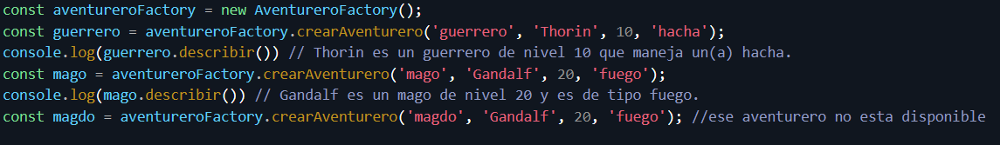

Examen
Objetivo del Ejercicio
Crear una jerarquía de clases que represente diferentes tipos de aventureros en un juego de rol, como guerreros y magos, y usar una fábrica para generar instancias de estos aventureros.
Pasos a Seguir
Parte 1: Creación de Clases
- Crear la clase base Aventurero:
- Propiedades:
- nombre: El nombre del aventurero.
- nivel: El nivel del aventurero.
- clase: La clase del aventurero (e.g., guerrero, mago).
- Método describir:
- Retorna una cadena que describe al aventurero con su nombre, clase y nivel.
- Crear la clase Guerrero que extiende de Aventurero:
- Propiedades adicionales:
- arma: El arma que maneja el guerrero.
- Método describir:
- Sobrescribir el método describir para incluir información sobre el arma.
- Crear la clase Mago que extiende de Aventurero:
- Propiedades adicionales:
- tipo: El tipo de magia que practica el mago (e.g., fuego, agua).
- Método describir:
- Sobrescribir el método describir para incluir información sobre el tipo de magia.
Parte 2: Creación de una Fábrica de Aventureros
- Crear la clase AventureroFactory:
- Método crearAventurero:
- Recibe el tipo de aventurero (guerrero o mago), nombre, nivel y un parámetro adicional (arma o tipo de magia).
- Usa un switch para decidir qué tipo de aventurero crear basado en el parámetro tipo.
- Retorna una instancia de Guerrero o Mago según corresponda.
- Si el tipo de aventurero no es válido, muestra un error en la consola.
Parte 3: Pruebas
- Crear instancias usando la fábrica:
- Crea un guerrero y un mago usando el método crearAventurero de la fábrica.
- Llama al método describir en cada instancia para verificar que la salida sea la correcta.
- Manejo de errores:
- Intenta crear un aventurero con un tipo inválido y verifica que se muestre un mensaje de error en la consola.
Puntos Clave
- Herencia: Asegúrate de entender cómo las subclases (Guerrero y Mago) heredan de la clase base (Aventurero).
- Sobrescritura de métodos: Comprende cómo y por qué sobrescribir el método describir en las subclases.
- Patrón de diseño Fábrica: Aprende cómo una fábrica puede simplificar la creación de objetos basados en diferentes condiciones.
Resultado esperado

Tiempo restante: 7200 segundos
Documentación